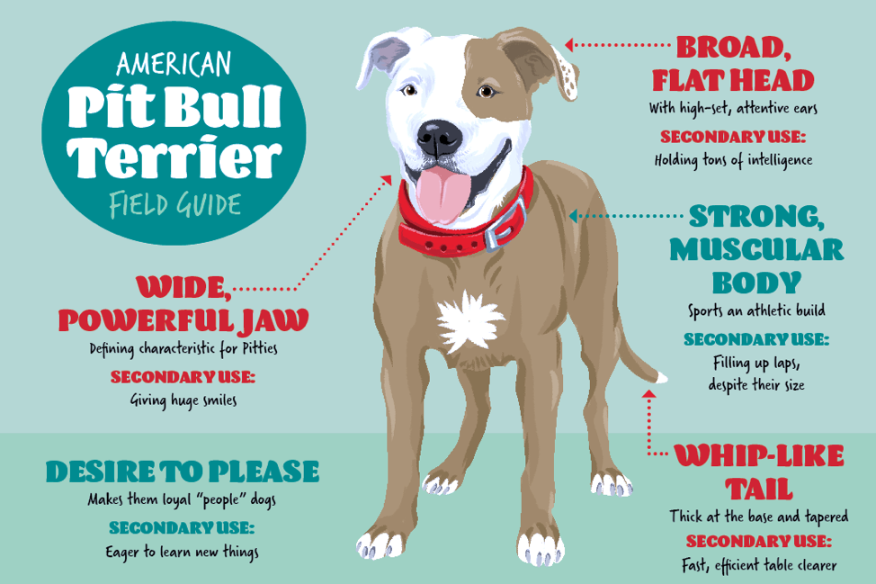

History of the Pitbull
In the 1800s in England, bulldogs were used to attack bulls or bears. This practice is called bull-baiting, which was outlawed in 1835. Soon after, dogfighting was created, with dogs being put against one anotherinstead of bulls. Some say dogfighting came to be in the United States after its development in the late 1830s and early 1840s, however others trace its history all the way back to 1817. Either way, dogfighting was definitley a popular form of entertainment in America. Eventually, dogfighting began to fall out of public favor. Sadly, ever since then, pit bulls have become associated with dogfighting and violence, causing people to view them with fear and suspicion or to stay away from them completely.
Pitbulls: Reputation vs. Reality
As you probably are aware, pitbulls do not have a great reputation. Between what we heave heard through media and our friends and family, they are usually known for attacking. However, most Pit Bulls are owned by many people you may know. Because of the explosion of Pit Bull breeders, thousands of Pit Bulls are ending up in shelters. This convinces people even further, making them believe that they are dangerous pets and that is why they're owners do not seem to want them, but this is not usually the case. I will not say that all pitbulls are not dangerous, however not all of them are dangerous! Not just pitbulls cause dog attacks. In fact, research shows that Labrador Retrievers have caused more dog attacks than Pitbulls, however, media never seems to talk about those stories.

Saving the Pitbulls
Have you ever clicked onto an animal shelter website in hopes at looking at some cute puppies? You probably soon noticed the hundreds of pit bulls staring back at you from the screen. Pibulls are still one of the highest breeded dogs, overall there are approximately 78.2 million dogs throughout the United States, 3.91 million of these dogs are pitbulls. Sadly, because of this and their reputation, many of them reside in shelters around the world.You can help. Just by giving one of these sweet pitbulls a safe place to live in peace.
Animal Shelters near you
Here are a few sources we provided for adopting a pitbull: